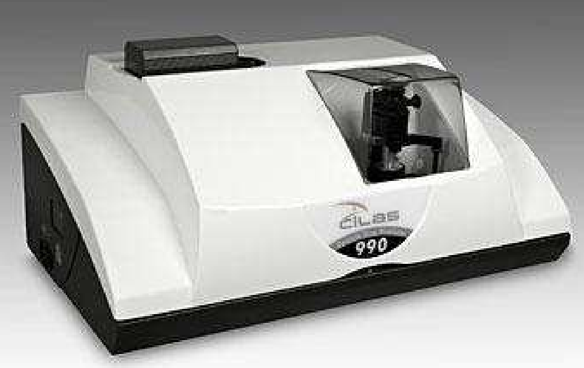
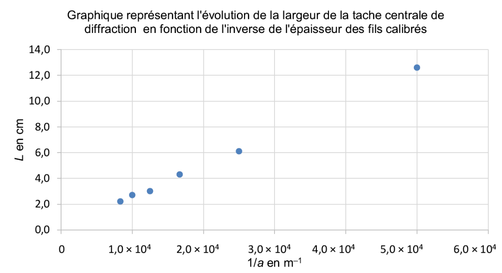
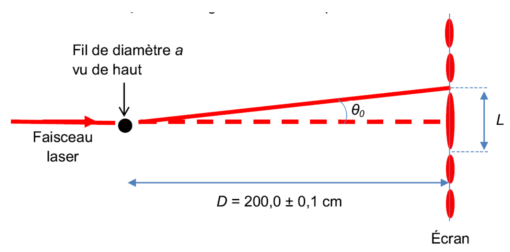
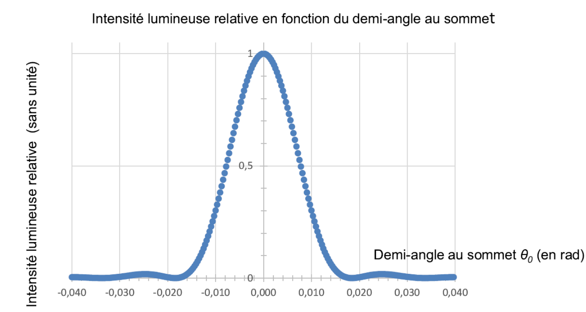

On attribue la découverte de la diffraction à Francesco Grimaldi
(1618-1663). Le but de l’exercice est d’étudier une application pratique
de la diffraction : la détermination de la taille moyenne de poudre de
cacao par granulométrie.
Les deux parties de l’exercice sont indépendantes.

L’appareil ci-contre permet de mesurer la taille de particules allant
de 40 nm à 2500 μm tout en occupant un encombrement extrèmement
réduit.
Le fabricant de l’appareil indique que deux diodes laser de longueur
d’onde 635 nm et 830 nm sont utilisées dans cet instrument de
mesure.
Le succès du chocolat, auprès des consommateurs, est lié à des
caractéristiques gustatives bien identifiées mais aussi à la
granulométrie de chacun des constituants.
Cette dernière propriété représente un enjeu important du procédé de
fabrication puisque des particules trop finement broyées rendront le
chocolat collant alors que de trop grosses particules lui donneront un
aspect granuleux à l’œil et en bouche.
La mesure de la taille des particules, par diffraction laser, est une
technique simple et rapide, adaptée à la détermination de la
distribution granulométrique de tous les types de chocolat comme les
chocolats de couverture utilisés pour le nappage, les chocolats au lait
ou les chocolats utilisés pour les recettes instantanées.
| Type de chocolat | De couverture | Au lait | Aggloméré |
|---|---|---|---|
| \(a\) (*) en μm | 10 | 30 | 300 |
(*) \(a\) représente le diamètre moyen recommandé de la poudre de cacao pour un type de chocolat.
Le z-score permet de comparer une valeur expérimentale à une valeur théorique en tenant compte des incertitudes associées. Il est défini par la relation suivante : \[z = \dfrac{|x_{\text{expérimentale}} - x_{\text{théorique}}|}{u(x)}\] Si \(z < 2\), on considère que la valeur expérimentale est en accord avec la valeur théorique.
L’objectif de cette partie est de vérifier la valeur de la longueur
d’onde \(\lambda\) d’une des diodes
laser utilisées dans l’appareil de granulométrie. Sur le trajet du
faisceau laser, on intercale des fils de différents diamètres. Sur un
écran placé à une distance \(D\), on
observe une figure de diffraction.
\(L\) représente la largeur de la tache
centrale et \(\theta_0\) le demi-angle
au sommet exprimé en radian.
Rappeler les principales propriétés du faisceau d’un laser.
Pour une longueur d’onde donnée, déduire l’évolution du demi-angle \(\theta_0\) en fonction du diamètre \(a\) du fil. Donner la relation qui lie \(\lambda\), \(\theta_0\) et \(a\).
On fait l’hypothèse que l’angle \(\theta_0\) est petit. Dans ce cas, on peut
écrire \(\tan \theta_0 \approx
\theta_0\) avec \(\theta_0\) en
radian.
A l’aide du schema, démontrer que la largeur de la tache centrale est
donnée par l’expression : \[L = k \cdot
\dfrac{1}{a}\] avec \(k = 2 \lambda
\cdot D\)
Expérimentalement, on mesure la largeur de la tache centrale \(L\) pour des fils calibrés de différentes valeurs de diamètre \(a\). On porte les valeurs obtenues dans le graphique ci-dessous. A partir du graphique, déterminer la longueur d’onde \(\lambda\) de la diode laser utilisée.
L’incertitude absolue sur la longueur d’onde \(\lambda\), notée \(u(\lambda)\), peut être déterminée à partir
de la relation suivante : \[u(\lambda) =
\lambda \cdot \sqrt{\left(\dfrac{u(D)}{D}\right)^2 +
\left(\dfrac{u(k)}{k}\right)^2}\] L’incertitude absolue sur la
valeur du coefficient directeur est \(u(k) =
\SI{1,2E-7}{\meter\squared}\).
Exprimer la valeur de la longueur d’onde \(\lambda\) avec son incertitude. Confronter
aux valeurs donnnées par le fabriquant de l’appareil en calculant le
z-score puis conclure.

Dans cette partie, on considère que l’on peut déterminer le diamètre moyen des grains de cacao d’une poudre donnée en utilisant une figure de diffraction réalisée avec la diode laser de longueur d’onde \(\lambda = \SI{635}{nm}\).

La figure de diffraction obtenue par un trou circulaire est
constituée de cercles concentriques alternativement brillants et sombres
avec : \[\sin \theta_0 = \dfrac{1,22 \cdot
\lambda}{a}\] \(\lambda\) :
longueur d’onde du faisceau laser, exprimée en mètre
\(a\) : diamètre du trou, exprimé en
mètre
\(\theta_0\) : demi-angle au sommet,
exprimé en radian
En utilisant un montage proche de celui donné ci-dessous, on réalise l’expérience sur un échantillon de poudre de cacao. Sachant que les grains de cacao sont assimilés à des sphères, justifier le fait qu’on observe une figure de diffraction identique à celle obtenue avec un trou circilaire.
Après traitement informatique, des résultats expérimentaux lors du contrôle d’un échantillon de poudre de cacao, on obtient le graphe ci-après donnant l’intensité lumineuse relative sur l’écran en fonction du demi-angle \(\theta_0\). Peut-on utiliser cet échantillon pour un chocolat de couverture ?

De tous temps, certaines substances sont considérées comme des
remèdes contre tous les maux, des panacées.
Au début du 20e siècle, le Radithor, sorte de "potion
magique" était censé soigner plus d’une centaine de maladies.
Un cancérologue américain a trouvé chez un antiquaire, plusieurs
bouteilles de Radithor. Bien que vidées depuis 10 ans de leur contenu,
les bouteilles se sont avérées être encore dangereusement radioactives.
Chacune avait vraisemblablement contenu environ un microcurie de radium
226 et de radium 228
1 microcurie correspond à 3,7E4 Bq.
| Noyau | Radium 226 | Radium 228 | Actinium 228 | Radon 222 | Hélium 4 |
|---|---|---|---|---|---|
| Symbole |
| Noyau | Radium 226 | Radon 222 | Hélium 4 |
|---|---|---|---|
| Masse en \(u\) | 225.9970 | 221.9703 | 4.0015 |
Unité de masse atomique : \(\SI{1}{u}=\SI{1,66054E-27}{kg}\)
Célérité de la lumière dans le vide : \(c=\SI{3,00E8}{\meter\per\second}\)
Constante d’Avogadro : \(N_A=\SI{6,02E23}{\per\mole}\)
Masse molaire du : \(M=\SI{226}{\gram\per\mole}\)
Sur l’étiquette du flacon de Radithor est mentionnée la présence de mésothorium, ancienne dénomination du radium 228. Cette "eau certifiée radioactive" contenait également du radium 226.
Les noyaux de radium 228 et de radium 226 sont des isotopes. Expliquer.
Le radium 228 se désintègre pour donner l’isotope 228 de l’actinium et une particule notée . \[\ce{^228_88Ra -> ^228_89Ac + ^A_Z X}\] Compléter l’équation de désintégration en justifiant puis identifier . De quel type de radioactivité s’agit-il ?
Dans la suite de l’exercice, on néglige la présence de radium 228
dans le Radithor.
On suppose que l’activité radioactive du flacon est uniquement due à la
présence de l’isotope 226 du radium. Celui-ci se désintègre spontanément
selon l’équation suivante : \[\ce{^226_88Ra
-> ^222_86Ac + ^4_2He}\]
L’activité A(t) d’un échantillon de noyaux de radium 226 suit la loi de décroissance exponentielle \(A(t)=A_0\cdot e^{-\lambda \cdot t}\), avec \(A_0\) l’activité à \(t=\SI{0}{s}\).
Rappeler la définition de la demi-vie \(t_{1/2}\) d’un échantillon radioactif.
Vérifier sur la courbe donnant l’évolution de l’activité de l’échantillon en fonction du temps représentée dans le Figure 1, que la demi-vie du radium 226 est égale à 1,60E3 ans.
Établir la relation entre la demi-vie et la constante radioactive \(\lambda\) puis calculer la valeur de \(\lambda\) en s.
Donner la relation liant l’activité \(A(t)\) d’un échantillon radioactif au nombre \(N(t)\) de noyaux radioactifs présents.
Calculer \(N_0\), le nombre de noyaux de radium 226 initialement présents dans le flacon de Radithor.
Vérifier que le flacon contenait alors une masse \(m_0 = \SI{1,0}{\micro\gram}\) de radium 226.